Architektur der Experimentierumgebung
Gesamtübersicht und Ablaufdiagramme der aktuellen Implementierung, ohne Illustrationsmodul. Die sieben produktiven Module sind einzeln dargestellt; Routingdetails und die vier Testmodule ergänzen die Übersicht.
In den Aktivitätsdiagrammen stehen Rauten für Entscheidungen und Pfeile für den Ablauf. Kreis und Abschlusskreis markieren Anfang und Ende. Die Diagramme zeigen die wesentlichen Schritte, nicht jede Fehlerprüfung.
Überblick / 00
Gesamtarchitektur
Schritt 5: produktive Module und zentrale Abhängigkeiten
- Eingabe
- GUI-Auswahl oder Pipeline-CLI mit JSON; direkter Aufruf von experiment.py als weiterer Einstieg.
- Verarbeitung
- Die Pipeline steuert Experimentkern und Auswertung. Die Komponenten enthalten ihre zentralen Ein- und Ausgaben.
- Ausgabe
- Rohdaten, Summary, Plots und Laufmetadaten. Der gewählte Ausführungsmodus bestimmt den Umfang.


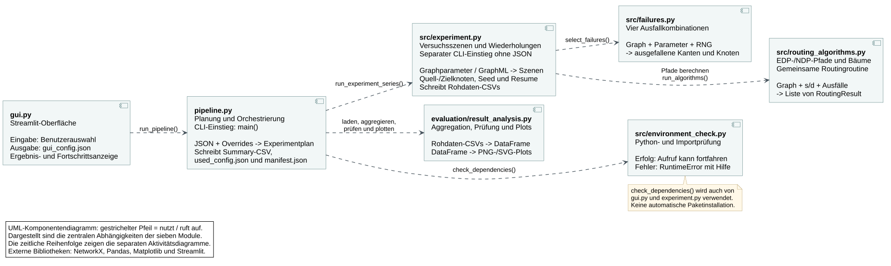
Das Komponentendiagramm zeigt Abhängigkeiten, nicht die zeitliche Reihenfolge. Die Ablaufdiagramme darunter ergänzen diese Sicht.
Module / 01
GUI
- Eingabe
- Auswahl von Graphen, Algorithmen, Ausfallmodellen, Metriken, Wiederholungszahl und Ausführungsmodus.
- Verarbeitung
- main(), build_gui_config(), write_gui_config(), mode_to_pipeline_flags(), render_result().
- Ausgabe
- gui_config.json, Fortschritt und Ergebnisanzeige; bei Servervorbereitung zusätzlich run_on_server.sh.


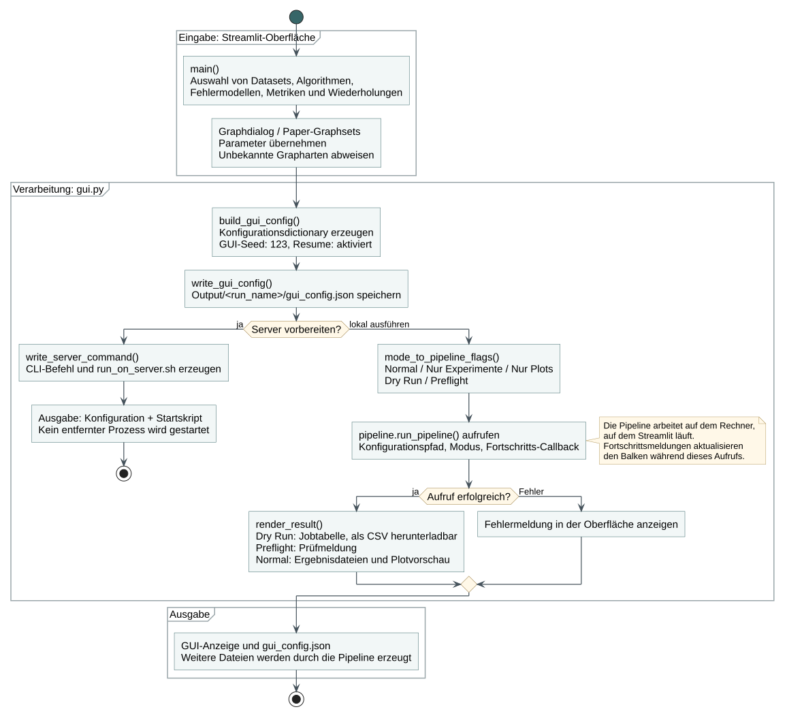
Die GUI schreibt ihre Konfiguration auch vor Dry Run und Preflight. Server vorbereiten startet keinen entfernten Prozess.
Module / 02
Pipeline
- Eingabe
- Pfad einer JSON-Konfiguration und optionale Überschreibungen, Modusschalter und Fortschritts-Callback.
- Verarbeitung
- run_pipeline(), build_experiment_plan(), validate_preflight(), run_experiments(), write_summary_and_plots(), write_manifest().
- Ausgabe
- Dictionary mit Plan und Dateipfaden; bei normalem Lauf raw/, summaries/, plots/, used_config.json und manifest.json.


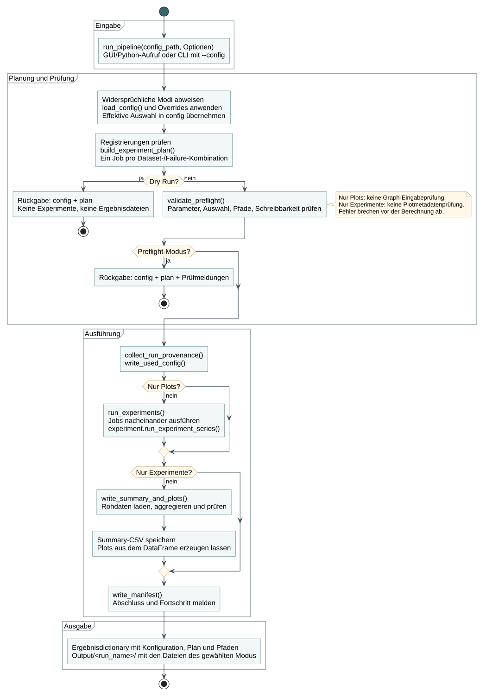
Die Pipeline-CLI benötigt --config. Nur die separate Experiment-CLI kann ohne JSON gestartet werden. Dry Run erzeugt im Pipeline-Kern keine Ergebnisdateien; Preflight kann den Ausgabeordner anlegen.
Module / 03
Experimentsteuerung
- Eingabe
- Graphparameter oder GraphML-Pfad, Algorithmen, Ausfallparameter, runs, seed, Resume und Ausgabeordner.
- Verarbeitung
- run_experiment_series(), create_graph(), choose_graph_endpoints(), create_instance_rows(), write_rows().
- Ausgabe
- Rohdaten-CSVs und deren Pfade. Eine Ergebniszeile entspricht einem Algorithmus in einer Szene und Failure-Konfiguration.


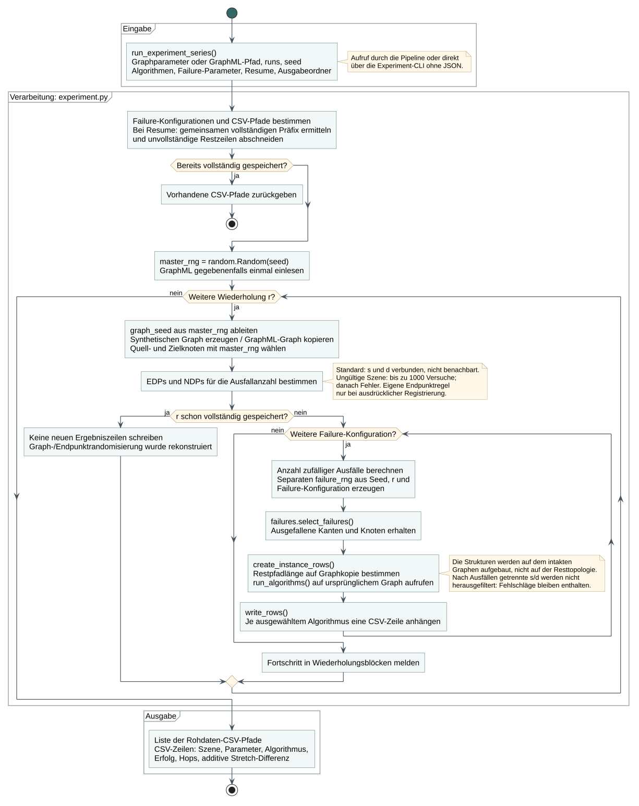
Eine Szene enthält einen Graphen, Quell-/Zielknoten und Ausfälle. Alle ausgewählten Algorithmen erhalten dieselbe Szene. Bei Zufallsausfällen berechnet dieses Modul round(max(k - 1, 0) * failFactor), mit k = EDP-Anzahl für Kanten und NDP-Anzahl für Knoten. Der failure_rng-Schlüssel enthält Seed, Wiederholung, Typ, Modell, failFactor und failureStart, nicht failureDrop.
Module / 04
Ausfallerzeugung
- Eingabe
- Unveränderter Graph, s, d, Ausfalltyp und -modell, gewünschte Ausfallzahl bzw. Clusterparameter sowie ein Zufallsgenerator.
- Verarbeitung
- select_failures(), clustered_link_failures(), clustered_node_failures(), node_failures_to_edges().
- Ausgabe
- Zwei Listen: ausgefallene Kanten und ausgefallene Knoten. Bei Kantenausfällen ist die Knotenliste leer.


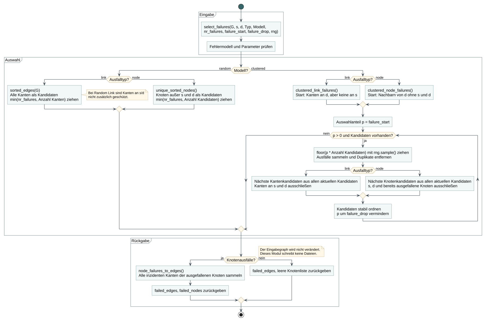
Knotenausfälle werden als Ausfall aller inzidenten Kanten an das Routing übergeben. Cluster breiten sich aus allen aktuellen Kandidaten aus, nicht nur aus gezogenen Ausfällen. Für Cluster gelten 0 < failure_start <= 1 und 0 < failure_drop <= 1. Das Modul verändert den Graphen nicht und schreibt keine Dateien.
Module / 05
Routingalgorithmen
- Eingabe
- Ursprünglicher Graph, s, d, Liste ausgefallener Kanten und ausgewählte Algorithmen.
- Verarbeitung
- run_algorithms() → route_algorithm() → build_structures() → route_structure().
- Ausgabe
- Eine Liste von RoutingResult-Objekten, noch keine CSV-Dateien.


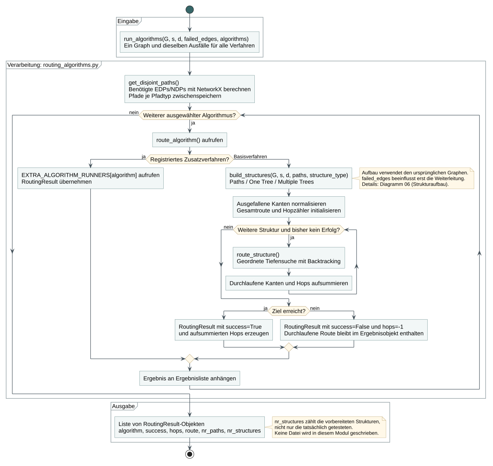
Die sechs Basisverfahren teilen sich die Routingroutine. Registrierte Zusatzverfahren können eigene Runner verwenden. Aufbau und Trunkierung berücksichtigen nicht die Ausfälle; erst die Weiterleitung überspringt ausgefallene Kanten.
Routingdetails / 06
Aufbau der Pfade und Bäume
- Eingabe
- Graph, s, d, berechnete EDPs oder NDPs und Strukturtyp paths, one_tree oder multiple_trees.
- Verarbeitung
- build_structures(), _base_tree(), _grow_tree(), truncate_tree().
- Ausgabe
- RoutingStructure-Liste, für das Routing nach der Länge der ursprünglichen Pfade aufsteigend geordnet.


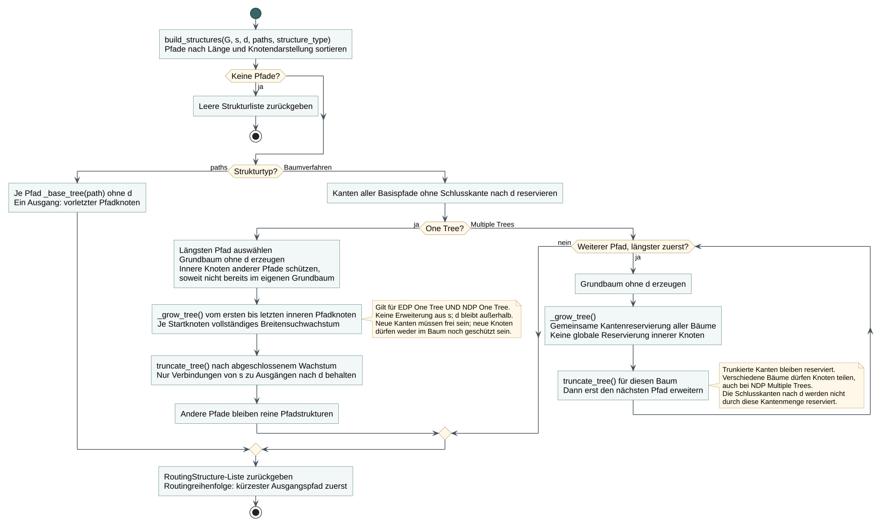
One Tree schützt bei beiden Pfadtypen die übrigen Basispfade. Multiple Trees reserviert gemeinsam Kanten, aber keine inneren Knoten. Schlusskanten nach d liegen außerhalb der gespeicherten Baumgraphen. Trunkierung erfolgt nach dem gesamten Wachstum eines Baums, nicht nach jedem eingefügten Ast.
Routingdetails / 07
Weiterleitung in einer Struktur
- Eingabe
- Eine RoutingStructure, s, d, normalisierte Ausfallkanten und das Flag prefer_original_path.
- Verarbeitung
- route_structure(), _rooted_children(), _distance_to_exit() und die innere rekursive Funktion visit(node).
- Ausgabe
- Das Tupel (success, hops, route) einer einzelnen Struktur.


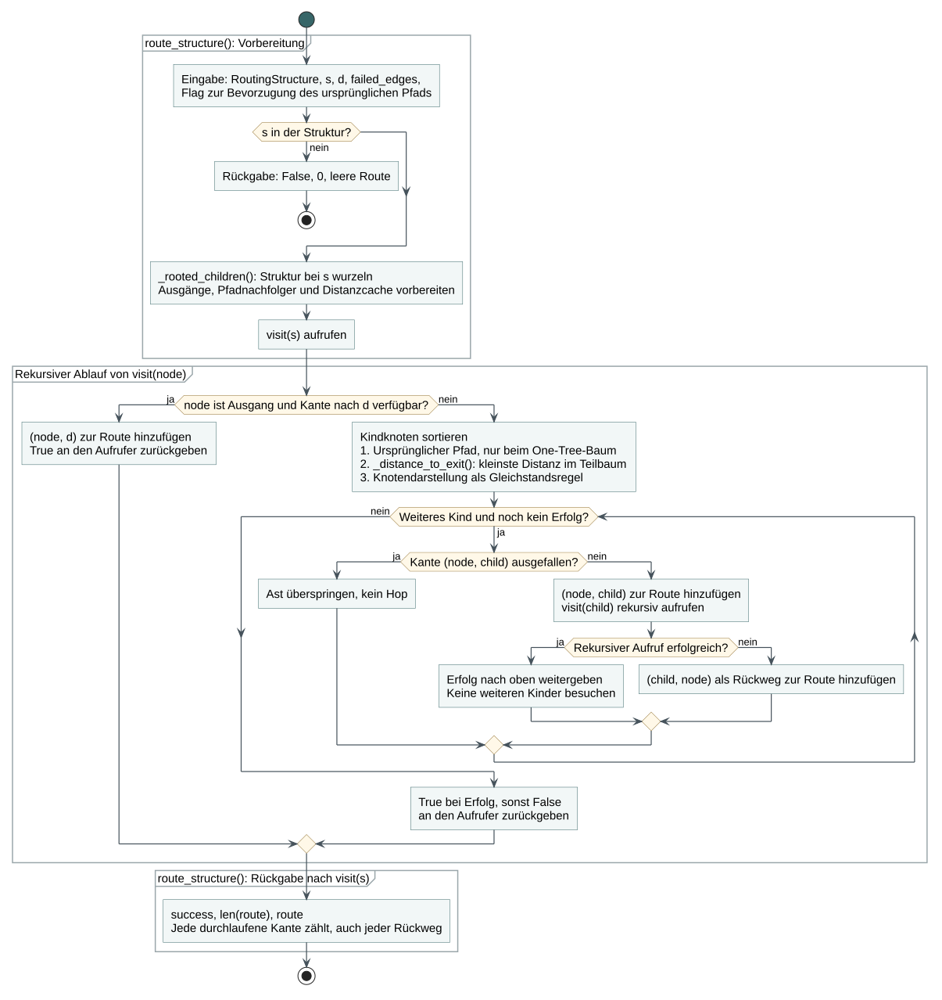
Ein Rückweg zählt als Hop, eine übersprungene Ausfallkante nicht. Die Ausgangsdistanzen werden in der vorbereiteten Struktur berechnet, ohne die Ausfälle in der Rangordnung zu berücksichtigen. route_algorithm() addiert anschließend die Hops aller getesteten Strukturen.
Module / 08
Ergebnisanalyse
- Eingabe
- Dataset-Verzeichnisse mit Rohdaten sowie erwartete Parametergruppen, Algorithmen, Wiederholungszahl und Plotvorgaben.
- Verarbeitung
- load_result_directories(), aggregate_results(), validate_summary(), plot_all_comparisons().
- Ausgabe
- DataFrames und PNG-/SVG-Plots. Die Summary-CSV wird vom aufrufenden pipeline.py geschrieben.


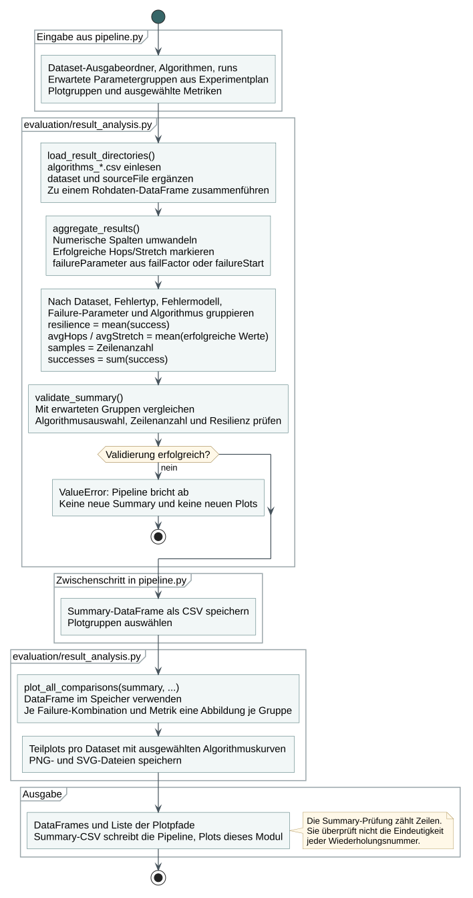
Resilienz umfasst alle Szenen, mittlere Hops und Stretch nur erfolgreiche Routings. Die Plotfunktionen erhalten den aggregierten DataFrame, lesen nicht die Summary-CSV. Vollständig fehlende Gruppen werden mit dem Plan abgeglichen; eindeutige Wiederholungsnummern prüft validate_summary() nicht. Automatische Plotgruppen enthalten höchstens drei Datasets; manuelle Gruppen können abweichen.
Module / 09
Umgebungsprüfung
- Eingabe
- Namen der Bibliotheken, die ein aufrufendes Modul benötigt, und die aktuelle Python-Umgebung.
- Verarbeitung
- check_dependencies() kontrolliert die Python-Code-Mindestversion und versucht die angeforderten Imports.
- Ausgabe
- Bei Erfolg None; bei ungeeignetem Python oder fehlgeschlagenem Import ein RuntimeError mit Einrichtungshinweisen.


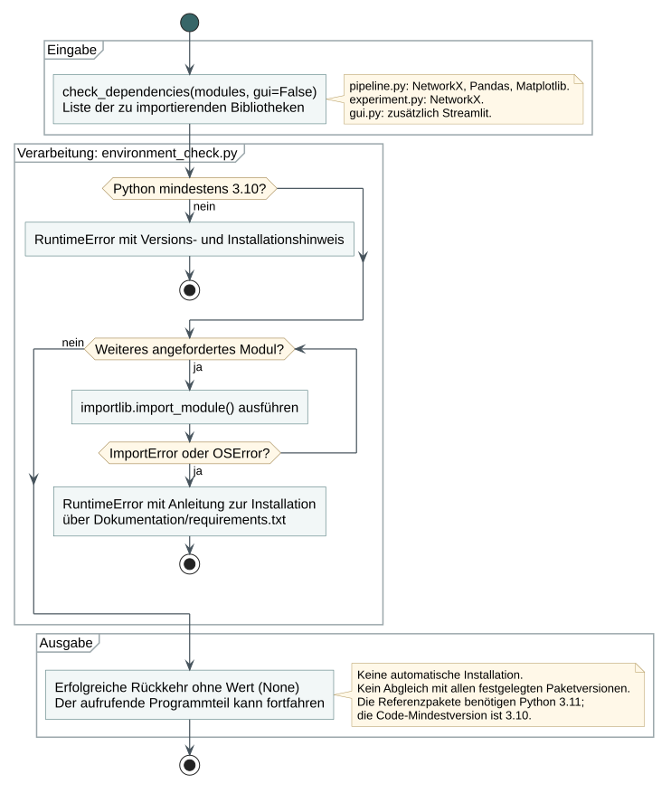
Die Funktion installiert keine Pakete und erzwingt keinen vollständigen Versionsabgleich mit requirements.txt. Python 3.10 ist die Code-Mindestversion; die festgelegten Referenzpakete benötigen Python 3.11 oder neuer.
Routingdetails / 10
Datenklassen des Routings
- Eingabe
- Ergebnisse des Strukturaufbaus beziehungsweise der Weiterleitung.
- Verarbeitung
- RoutingStructure und RoutingResult sind die beiden tatsächlichen Datenklassen, keine erfundenen Klassen je Algorithmus.
- Ausgabe
- Strukturinformationen für die Weiterleitung und Ergebnisinformationen für experiment.py.


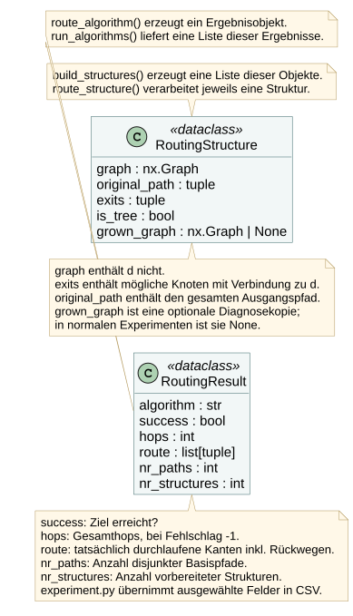
nr_structures zählt die vorbereiteten, nicht nur die getesteten Strukturen. Die Rohdaten-CSV speichert nicht die vollständige route. grown_graph ist eine optionale Diagnosekopie und im normalen Experiment None.
Tests / 11
Pipeline- und Kerntests
- Eingabe
- Kleine Testkonfigurationen, Graphen und feste Seeds.
- Verarbeitung
- Step5PipelineTest prüft Planung, Parameter, deterministische Szenen, Strukturen und kleine vollständige Läufe.
- Ausgabe
- unittest-Bericht; vorübergehende Ergebnisdateien in Testordnern.


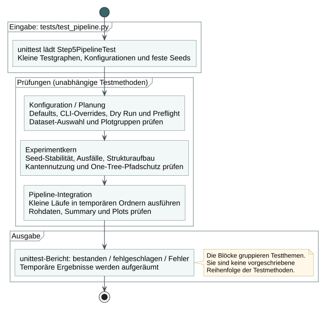
Die Diagrammblöcke fassen unabhängige Testmethoden thematisch zusammen, nicht in einer verpflichtenden Testreihenfolge.
Tests / 12
Tests der GUI-Hilfsfunktionen
- Eingabe
- Beispielauswahlen und Konfigurationen, ohne interaktive Browserbedienung.
- Verarbeitung
- Step5GuiTest prüft Zahlenbereiche, Datasets, Konfigurationsaufbau, Pfade, Modi und Serverbefehle.
- Ausgabe
- unittest-Bericht und temporäre Konfigurationsdateien.


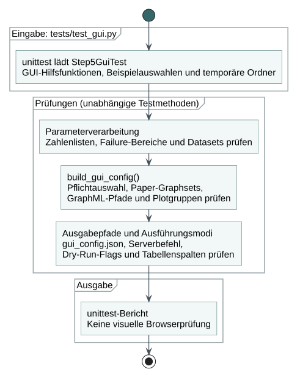
Diese Tests betreffen die Hilfsfunktionen. Die tatsächliche Streamlit-App wird im gesonderten Integrationstest geprüft.
Tests / 13
Regressionstests der Überarbeitung
tests/test_feedback_improvements.py
- Eingabe
- Testregistrierungen, Konfigurationen und temporäre Ergebnisdaten.
- Verarbeitung
- Prüfung von Defaults, Validierung, Metadaten, fehlenden Gruppen, Fortschritt und Resume.
- Ausgabe
- unittest-Bericht einschließlich gezielter Vergleiche neu berechneter und fortgesetzter Testläufe.


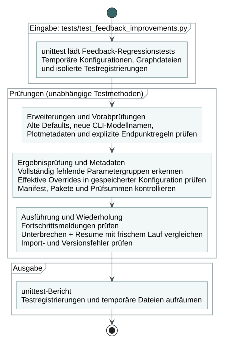
Die Übersicht zeigt die nicht auf Illustrationen bezogenen Prüfbereiche. Sie ist kein Nachweis, dass alle möglichen Erweiterungen oder Konfigurationen korrekt sind.
Tests / 14
Streamlit-Integrationstests
- Eingabe
- Streamlit-AppTest, isolierte App-Zustände und ein kleiner Pilotlauf.
- Verarbeitung
- GuiIntegrationTest: unbekannte Graphart, unveränderte Vorauswahl und vollständiger GUI-Pilot.
- Ausgabe
- unittest-Bericht; Pilot mit vier Rohdaten-CSVs und 24 Plotdateien. Ohne Streamlit werden die Tests übersprungen.


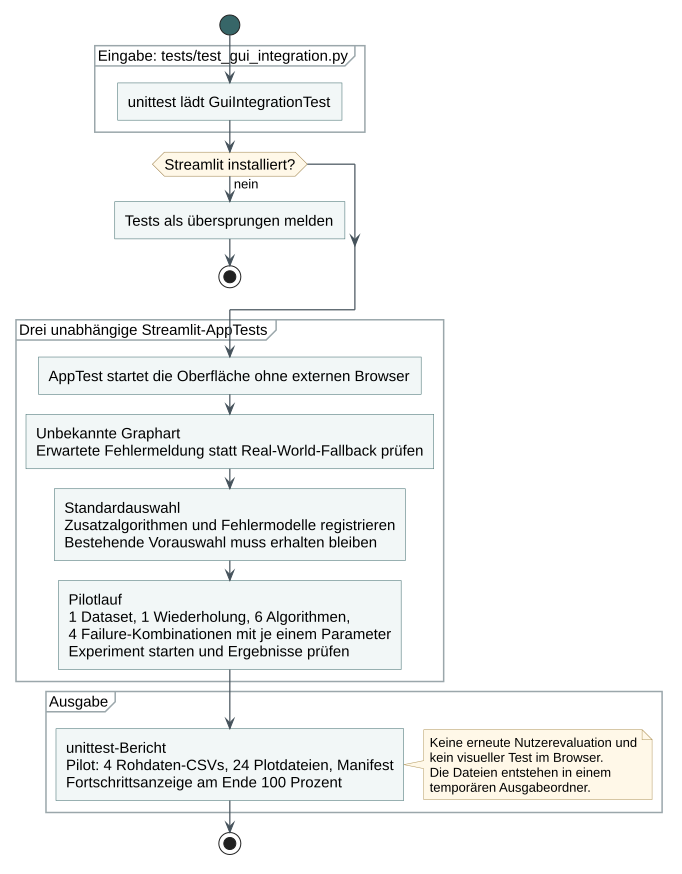
AppTest benötigt keinen externen Browser. Damit werden weder visuelle Browserprüfungen noch Rückmeldungen echter Benutzer ersetzt.